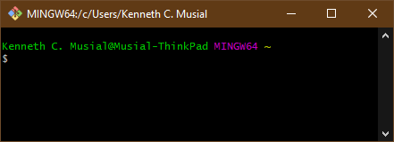

Command Line Fundamentals > Development Environment
Git Bash (windowsOS)
Learning Objectives
By the end of this lesson you will be able to:
- Understand the differences between WindowsOS Git Bash and MacOS Git Bash
- Install and/or configure the Git Bash application on a windowsOS platform
- Use basic web development commands with the Git Bash application
Intro to the Git Bash Terminal
The Bash Shell Environment is the preferred Command Line Interpreter/Interface (CLI) for Web Developers. Bash is the default CLI on Linux and MacOS. The default CLI on WindowsOS however is the windows command shell. Bash is available on WindowsOS through free and open source applications. The Git version of Bash (Git Bash) is preferred by Galvanize Learn for WindowsOS users in this course.
On this page, we'll provide some information to get you started with Git Bash and identify some of the differences between WindowsOS Git Bash and MacOS Git Bash. Later instruction in this course will dive into the details on how to use Git Bash to execute programs, create and manage files and folders, interface with text and code editors and connect with Git Hub for code storage, sharing and version control.
Git Bash is included with the installation of Git for Windows. The Git for Windows download and installation instructions are available here.
Discover the Terminal
After you've installed the Git Bash application, you should open it up. You'll see something like this:
In the default settings, Git Bash provides a few elements of information about your shell environment:
| Text | Location | Description |
| MINGW64:/C/Users/Kenneth C. Musial | Top of Git Bash Window | Name of the Current Directory. In this case, it's the home directory. |
| Kenneth C. Musial@Musial-ThinkPad | Above the command line | Name of your user account @ Name of your computer |
| MINGW64 | Above the command line | MINGW64 is the value from the MSYSTEM environment variable; Mingw-w64 is a free and open source software development environment to create Microsoft Windows applications. |
| ~ | Above the command line | This location above the command line identifies the current directory. The "~" is a "Tilde" symbol. In Git Bash, the "~" identifies the home directory location. |
| $ | Bottom line of the terminal | This is the prompt symbol for the command line |
Basic Commands and/or Keyboard Shortcuts
yada yada yada test
Challenge
yada yada yada